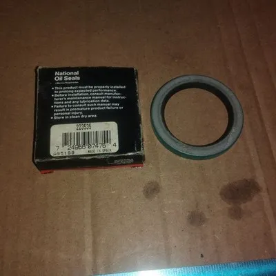

Distributor Rotors
1970-1995 KEM W292X Distributor Rotor NOS Geo Tracker Subaru 1800 Toyota Corolla
W292X
Fits 1985-1988 Suzuki Forsa · 1980-1985 Suzuki SJ410 (453 listed)
$13.99
View details12 parts whose listing names at least one Suzuki vehicle, mostly ignition & tune-up, caliper pin & guide kits and engine parts. Fit depends on year, model and engine, so check the full vehicle list on each part page or message us before you buy.
12 parts
Online checkout through Square. Ships from Carbondale, PA, or pick up by confirmed appointment only. Fitment question? Message us.
W292X
Fits 1985-1988 Suzuki Forsa · 1980-1985 Suzuki SJ410 (453 listed)
$13.99
View details
W396X
Fits 1985 Suzuki SJ410 · 1986-1989 Suzuki Samurai (161 listed)
$14.99
View details
W2028
Fits 1987-1988 Suzuki Forsa · 1988-1989 Ford Festiva (57 listed)
$25.99
View details
14082
Fits 1991-1998 Suzuki Sidekick · 1989-1994 Suzuki Swift (2063 listed)
$12.99
View details
33779
Fits 1986-1995 Suzuki Samurai · 1989 Suzuki Sidekick (794 listed)
$14.99
View details
223535
Fits 1989-2001 Suzuki Swift · 1989-1991 Chevrolet Sprint (210 listed)
$19.99
View details
61391
Fits 2001-2008 Suzuki Grand Vitara · 2004 Suzuki Vitara (51 listed)
$12.99
View details
66902
Fits 2007-2009 Suzuki XL-7 · 2006-2011 Buick Lucerne (210 listed)
$14.99
View details
JH-167
Fits 1992-1994 Suzuki Swift · 1994-2000 Pontiac Firefly (69 listed)
$31.99
View details
JH-71
Fits 1985 Suzuki SJ410 · 1986-1989 Suzuki Samurai (125 listed)
$16.99
View details
JH-72
Fits 1985 Suzuki SJ410 · 1985-1989 Suzuki Samurai (155 listed)
$21.99
View details
JR-75
Fits 1985-1988 Suzuki Forsa · 1980-1984 Suzuki SJ410 (495 listed)
$14.99
View details